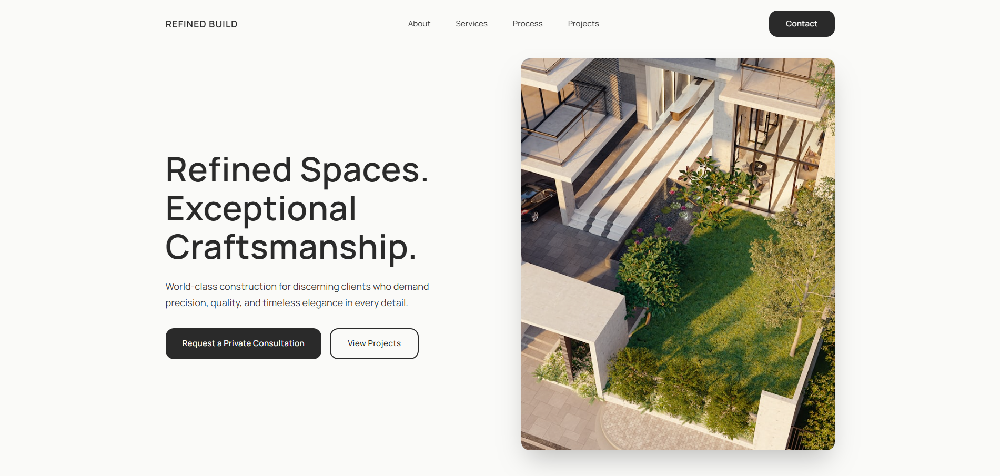
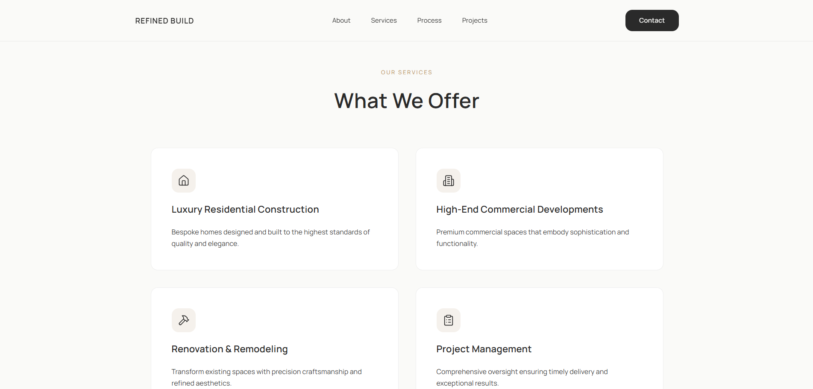
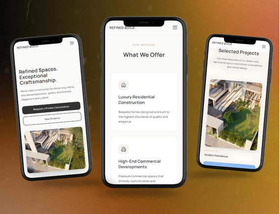

Case study: Construction company website
Refined Build
A website concept for a high-end construction brand. I wanted it to feel premium while guiding visitors toward one clear action: getting in touch.
- Type
- Personal practice project
- Role
- Designer and frontend developer
- Stack
- React, TypeScript, Vite, Tailwind CSS
- Focus
- Layout, hierarchy, responsive design
The challenge
Construction websites are often cluttered and outdated. This one needed to feel trustworthy, modern, and easy to act on.
Making a premium brand easy to act on.
The main challenge was turning a high-end construction brand into a page that feels premium without feeling cold. A visitor should understand what the company does, trust its quality, and see how to get in touch within the first scroll.
I checked every decision against one question: does this make it easier for a visitor to reach out?



Process
Direction and audience
I defined the audience (property developers and homeowners) and a direction of refined minimalism: strong typography and an earthy palette.
Layout and hierarchy
I mapped the journey from landing to contact. Each section answers one question: who they are, what they build, how they work, why to trust them.
Component build
Built with React, TypeScript and Vite. Tailwind handles styling and Framer Motion handles interactions, with consistent spacing across components.
Responsive refinement
I tested on mobile, tablet and desktop, tuned type scale and padding per breakpoint, then deployed to Vercel.
Tech stack
What I delivered
- A responsive site that works on mobile, tablet and desktop
- Clear ways to get in touch throughout the page
- Deployed and live on Vercel
See it live
Open the deployed project or go back to my other work.